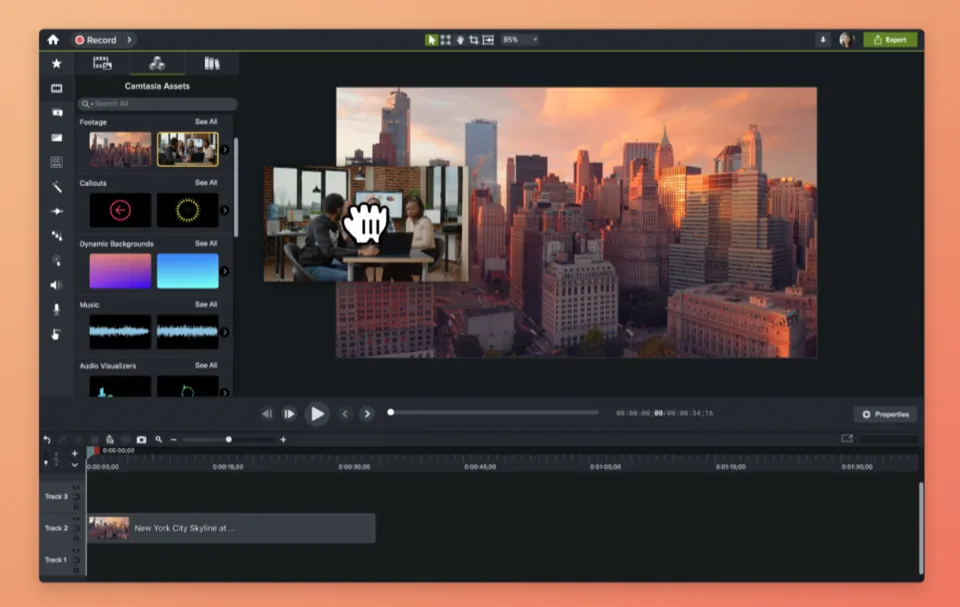
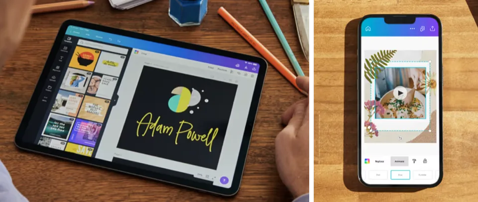
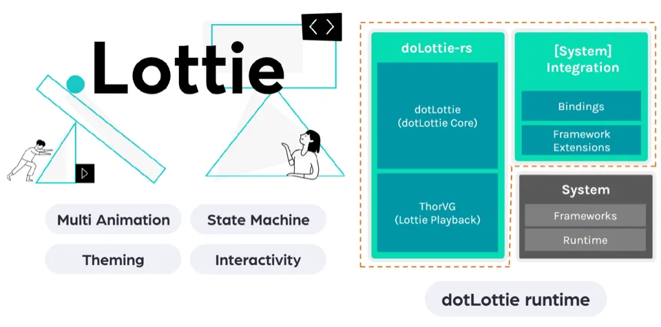
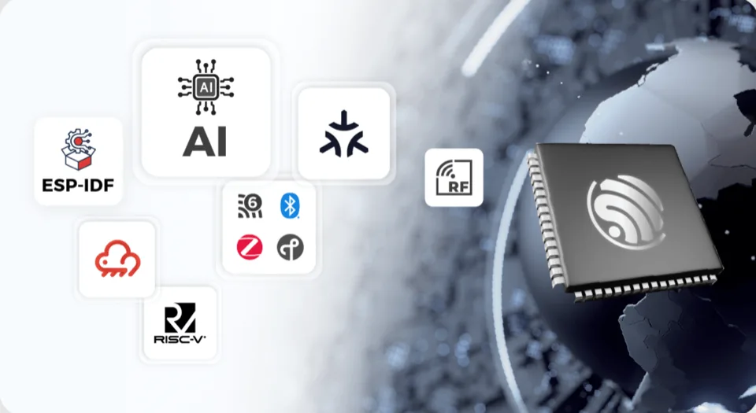
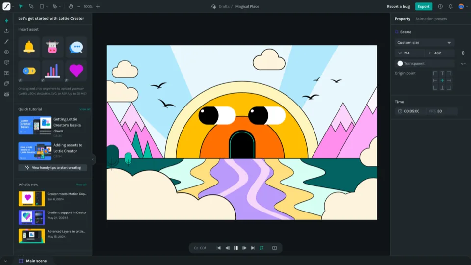
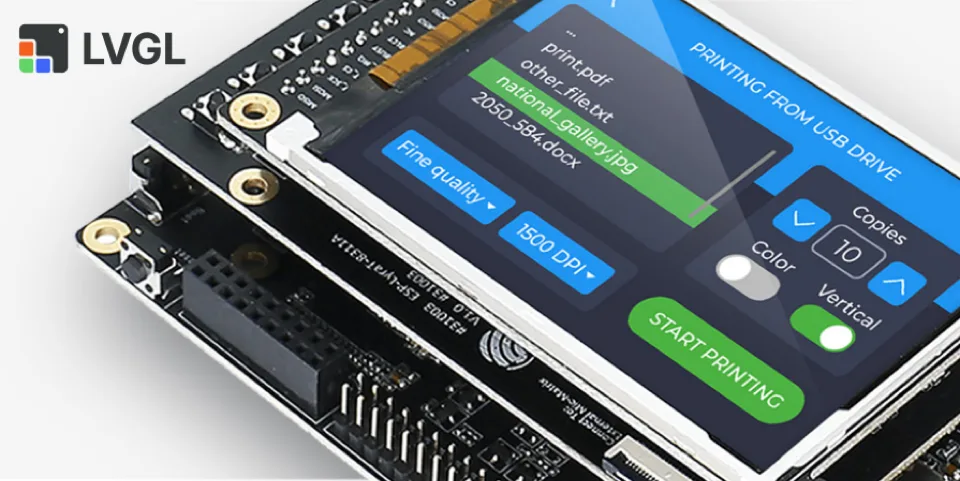
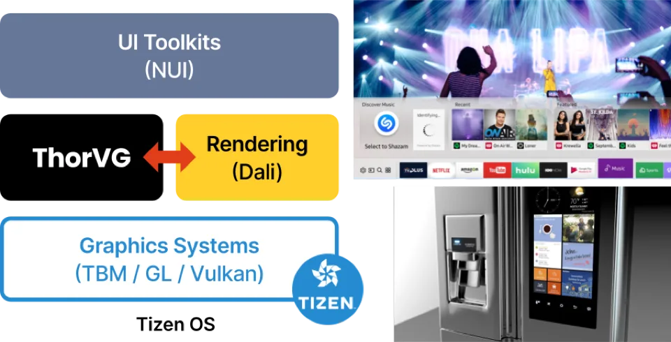

Showcase
In Practice
Camtasia

Canva iOS

dotLottie

Espressif

Godot

Lottie Creator

LVGL

Segger

Tizen

Other Projects
- Aestra, a creative music workstation powered by ThorVG for portable SVG rendering across UI system.
- ArcBrush is a free, node-based image editor that leverages ThorVG for high-performance SVG rasterization.
- Crank Software integrates ThorVG into Storyboard Engine for SVG rendering in embedded and industrial HMIs.
- Evergine integrates ThorVG through its own ThorVG.Net, bringing vector graphics to its cross-platform graphics engine.
- Figo leverages ThorVG to render vector-based UIs directly from design files across multiple platforms.
- Flowmux uses ThorVG to power its inline terminal image viewer, rendering SVG, Lottie, and other bitmap graphics.
- Flux Audio leverages ThorVG to power modern user interfaces and visuals across its audio platforms.
- GodSVG is an open-source, cross-platform SVG editor that uses ThorVG for realtime vector graphics rendering.
- LibreScoot uses ThorVG for GPU-free Lottie boot animations on its embedded mobility platform.
- MetaModule uses ThorVG as a lightweight vector rasterization backend for its modular synthesizer UI.
- MorphOS, an Amiga-inspired operating system integrating ThorVG for modern vector graphics rendering.
- OpenVela, an open-source AIoT operating system integrating ThorVG for vector graphics rendering.
- Paragraphic, a cross-platform parametric graphic design application using ThorVG for realtime vector graphics rendering.
- TinyPiXOS is a lightweight, open-source Linux OS leveraging ThorVG for GUI rendering.
- Vagabond uses ThorVG for vector graphics rendering in its procedurally generated 2D sandbox RPG.
- Wamsoft integrates ThorVG as the vector rendering engine for path-based graphics in its Kirikiri Layer plugin.
Would you like us to showcase your project with ThorVG? Feel free to open an issue or submit a pull request!
ThorVG Demo
Check out Thor Janitor, an interactive demo game fully rendered using ThorVG. It renders tens of thousands of objects in real-time with effects like DropShadow and Blur, running stably at 120+ FPS! Give it a try!